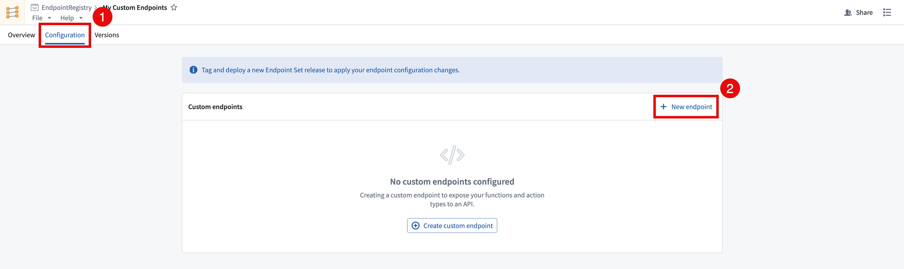
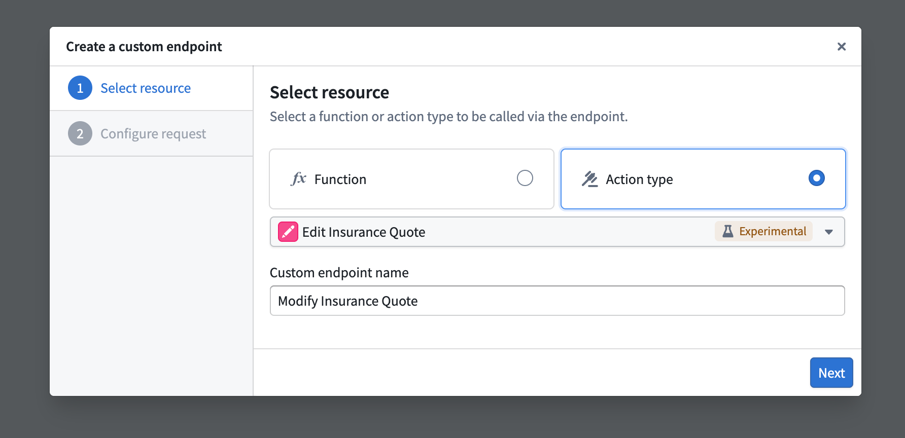
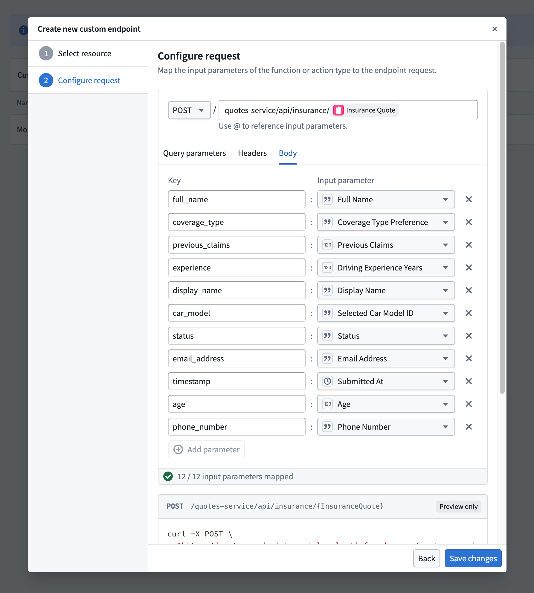
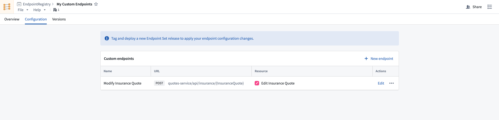

Define custom endpoints
After creating an endpoint set, you can configure new endpoint definitions that expose Foundry functions and actions.
Follow the instructions below to create a new endpoint definition:
- In the Custom Endpoints application, open the endpoint set that you want to add custom endpoints to and navigate to the Configuration tab.
- Select + New endpoint in the top right of the Custom endpoints table. This will open the Create a custom endpoint wizard. Note that newly created endpoint definitions will not be accessible until a release is created and deployed.

- In the Create a custom endpoint wizard, input your endpoint's name and select a backing action or function to be executed by your endpoint.

- After selecting a backing function or action, you will be asked to map each parameter to a newly defined endpoint parameter. The following configuration options are currently supported:
- User-defined request types:
GET, POST, PUT, DELETE, and PATCH.
- User-defined endpoint routes: Host a new endpoint on your application's subdomain, allowing you to define a custom path with path parameters conforming to your organization' standards, such as
/form/{formId}/section/{sectionId}.
- User-defined query parameters: Define query parameters that will pass in additional information to the underlying function when specified.
- User-defined header parameters: Provide additional headers in your request that can be handled and mapped to function inputs.
- User-defined request body: Custom request body shape definitions for
POST, PUT, PATCH, and DELETE requests.
:::callout{theme="neutral"}
All parameters must be mapped in the custom endpoint definition, including optional parameters. Some JSON parameters can only be mapped to the endpoint's requestBody.
:::

5. After selecting a resource and configuring the request remapping, select Create Endpoint to save the new endpointâs definition.
